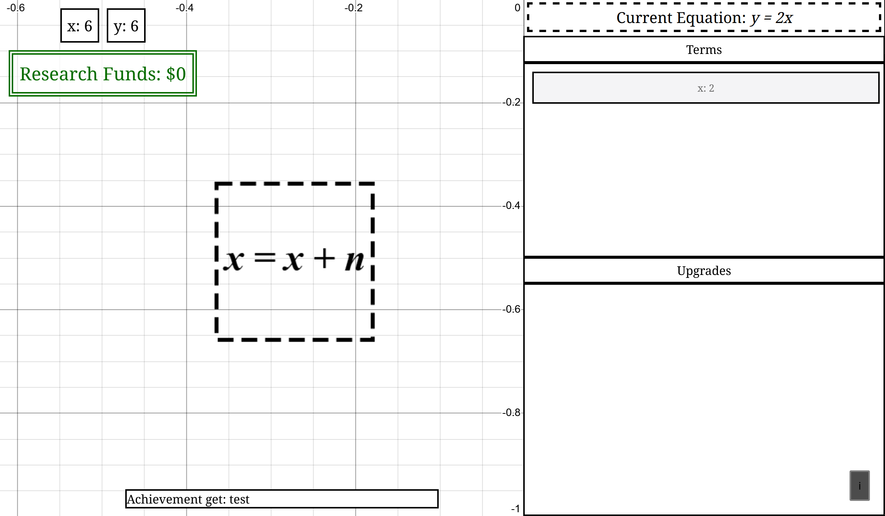

Personal Projects
While I'm often busy with school and work, when I do have free time I often spend it on personal projects that tie together the lessons I've learned in the classroom. I've found that working on these massively improves my retention and understanding of engineering concepts and materials I've learned in class, while also providing the opportunity to learn brand new skills not covered in classes. Below are some such projects that were particularly important for my learning.


Scrambled Idle
Overview
ScrambledIdle is a Javascript library designed to do the heavy work of creating an idle/incremental game(a game with a focus on background progression rather than moment-to-moment gameplay). It has many features not present in other incremental-focused libraries such as no-hassle saving, game pausing, many custom incremental-focused data structures, optional type safety, multiple syntax options, and more.Why I Did This Project
After making a game in a project called Idle Game Maker, I began to notice some major limitations and problems that couldn't be fixed from within Idle Game Maker. I did some research and discovered that there weren't any other solid options specifically for the creation of browser-based incremental games. At the time, I had just finished a CS data structures class, and so felt equipped to try to make something to fill this gap.What I Learned
- Front-end web app creation via JavaScript
- Object-oriented design
- Management of a relatively large codebase (2-3k lines of code)
- Project management via GitHub
- End user-oriented library design
- Proper code documentation
More information is on the GitHub page.